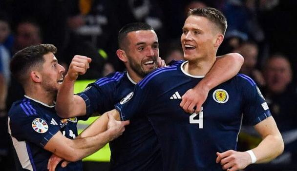
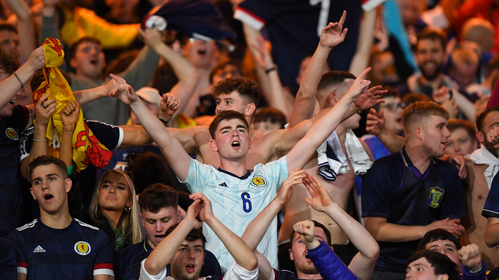

SCOTLAND HAVE DONE THE UNTHINKABLE! In the 117th minute, super sub Ryan Christie played the perfect ball over the Portugal backline and Scott McTominay got on the end of it before slotting it underneath Costa in the Portuguese net to give Scotland a 2-1 win over the former champions and ignite a party that will live on long into the night. The fans could never have imagined a tourament like this and these players will go down in history for the rest of time. The Tartan Army were on the pitch when the final whistle blew and the players were carried around the ground in celebration. Congratulations.

